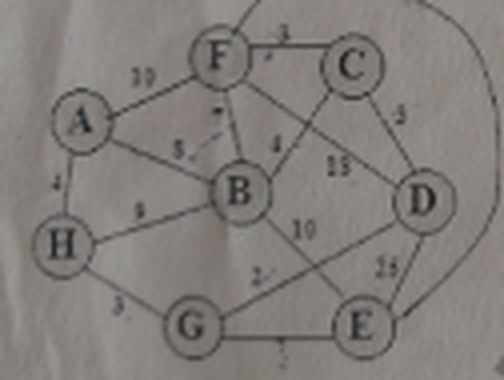
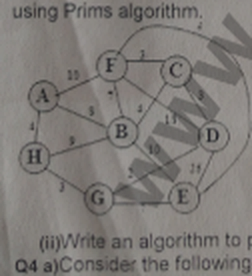

Introduction: elementary data structures, basic computational models, analysis of algorithms: best case, average case and worst-case behaviour, asymptotic notations: big O notation, recursion, recurrence relations to analyse recursive algorithms
Q.1 What are elementary data structures?
Q.2 Define computational model.
Long Q.1 Explain elementary data structures and basic computational models in detail.
Set 3 Q9 Discuss Basic Computational Model with Appropriate Examples.
Q1 What do you mean by Data Structures?
Set 1 Q10 What do you mean by Data Structures? Explain various types of data structures in detail.
Q21 What are the advantages of using data structure in daily life?
Q1(b) What are the applications of data structures?
Q1(a) Illustrate the steps involved in analyzing algorithm using an example.
Q.3 What is algorithm analysis?
Q.4 Differentiate between best case and worst case behaviour.
Long Q.2 Discuss the analysis of algorithms with best case, average case, and worst-case behaviour.
Q2(b)(ii) Write a note on Asymptotic notations.
Q.5 What is Big O notation?
Long Q.3 Explain asymptotic notations and Big O notation with examples.
Q2(a) What is recurrence relation? How it is useful to analyze an algorithm. Illustrate with an example.
Q.6 Define recursion.
Q.7 What are recurrence relations?
Long Q.4 Discuss recursion and recurrence relations used in recursive algorithms.
Set 2 Q9 What is the importance of Recurrence Relations to analyze recursive algorithms?
Q11 How to analyse recursive algorithms?
Q11 What do you mean by time and space complexity of an algorithm?
Divide and Conquer: general method, binary search, merge sort, quick sort, and arithmetic with large integers
Q.8 Explain divide and conquer method.
Long Q.5 Explain divide and conquer strategy with suitable examples.
Q.9 What is binary search?
Long Q.6 Describe binary search algorithm with its complexity analysis.
Q.10 Define merge sort.
Q.11 What is quick sort?
Long Q.7 Explain merge sort and quick sort algorithms in detail.
Q3(b)(ii) Write an algorithm to perform subtraction of two long integers.
Q.12 Explain arithmetic with large integers.
Long Q.8 Discuss arithmetic operations with large integers.
Q2(b)(i) Analyze quick sort algorithm using recurrence equation.
Greedy Method: General Method, Knapsack problem, Minimal Spanning Trees - Prim's and Kruskal's algorithm, single source shortest paths
Q1(c) Discuss the characteristics of greedy approach.
Q1(d) What is greedy approach? What are the problem associated with greedy approach?
Q.13 What is greedy method?
Long Q.9 Explain greedy method and its applications.
Set 3 Q7 Explain the Greedy Method along with the Minimum Spanning Trees and how it is useful in solving the problem.
Q1(b) Define feasible solution.
Q.14 Define knapsack problem.
Long Q.10 Solve the knapsack problem using greedy method.
Q.15 What is a minimum spanning tree?
Q2 Define Minimum Spanning Tree.
Q8 Distinguish between Prim's and Kruskal's algorithm.
Q.16 State Prim’s algorithm.
Q.17 State Kruskal’s algorithm.
Long Q.11 Discuss Prim’s and Kruskal’s algorithms for minimum spanning trees.
Set 1 Q6 Explain Prim’s Algorithm to find Minimum Spanning Tree with example. What is its Time Complexity?
Q.18 What is single source shortest path problem?
Long Q.12 Explain single source shortest path algorithms.
Set 2 Q7 Explain any Single Source Shortest Path algorithm with suitable example.
Q12 Demonstrate with an example the Single Source Shortest Path using greedy method.
Q22 What is the meaning of spanning of a tree?
Q3(a) What are the characteristics of minimum spanning tree? Generate the minimum spanning tree for following graph using Kruskal's algorithm.

Q3(b)(i) What is minimum spanning tree? Generate the minimum spanning tree for following graph using Prims algorithm.

Dynamic Programming: general method, chained matrix multiplication, optimal storage on tapes
Q6 Explain the concept of dynamic programming. How does it differ from other problem-solving techniques?
Q.19 Define dynamic programming.
Long Q.13 Discuss dynamic programming and its general method.
Set 3 Q5 What is Dynamic Programming? Explain the difference between Dynamic Programming and Greedy Approach.
Q1(c) State the principle of optimality.
Q7 What are the key characteristics of a problem that can be solved using dynamic programming?
Q3 What is the difference between top-down and bottom-up Dynamic Programming approaches?
Q4 Give an example of a Dynamic Programming problem.
Q.20 What is chained matrix multiplication?
Long Q.14 Explain chained matrix multiplication using dynamic programming.
Set 1 Q8 How can you use chained matrix multiplication to optimize the efficiency of other algorithms, such as Strassen's algorithm for matrix multiplication?
Set 2 Q5 Apply the concept of Dynamic Programming to display with an example Chained Matrix Multiplication.
Q13 Show that matrix chain multiplication order changes required multiplications.
Q.21 Explain optimal storage on tapes.
Long Q.15 Discuss optimal storage on tapes problem.
Q23 What is the main advantage of using optimal storage tape?
More on Dynamic Programming: all-pairs shortest paths, optimal binary search trees
Q.22 What is all-pairs shortest path problem?
Long Q.16 Explain all-pairs shortest paths problem.
Q14 Discuss All-Pairs shortest paths with example.
Q.23 Define optimal binary search tree.
Long Q.17 Discuss the construction of optimal binary search trees.
Q24 Discuss the concept of Optimal Binary Search.
Backtracking: general method, the 8-queens problem, graph coloring, Hamiltonian cycles
Q1(d) What is backtracking?
Q.24 What is backtracking?
Long Q.18 Explain backtracking technique with suitable examples.
Set 1 Q2 Explain the general structure of a backtracking algorithm. What are the essential components, and how do they work together?
Q.25 Explain the 8-queens problem.
Long Q.19 Discuss the 8-queens problem using backtracking.
Q16 Diagrammatically discuss the rules of the 8-Queen problem.
Q1(e) Define the graph coloring problem?
Q.26 What is graph coloring?
Long Q.20 Explain graph coloring and Hamiltonian cycles.
Set 3 Q6 Discuss Graph Coloring by taking an appropriate example. Also explain the applications of Graph Coloring.
Q.27 Define Hamiltonian cycle.
Set 2 Q8 Discuss the Hamiltonian Cycles with the Backtracking approach.
Branch and Bound: general method, 0/1 knapsack problem, travelling salesperson problem
Q.28 What is branch and bound method?
Long Q.21 Discuss branch and bound method in detail.
Q1(f) State the 0/1 Knapsack problem.
Q.29 Explain 0/1 knapsack problem.
Long Q.22 Solve the 0/1 knapsack problem using branch and bound.
Q25 What is 0/1 knapsack? Explain its use.
Q4(a) Consider the following 0/1 Knapsack problem instance: N=4, (P1, P2, P3, P4) = (10, 10, 12, 18), (w1, w2, w3, w4) = (2, 4, 6, 9) and m = 15. Trace the working of least cost branch and bound.
Q.30 What is travelling salesperson problem?
Long Q.23 Explain travelling salesperson problem.
Set 1 Q4 Describe a Branch and Bound algorithm for solving the Travelling Salesman Problem (TSP).
Set 2 Q4 Explain the method of reduction to solve the Travelling Salesman Problem (TSP) using Branch and Bound.
Q1(e) Define Lower bound in branch and bound?
Q9 Explain control abstraction of LC-branch and bound?
Pattern Matching: design of algorithms for pattern matching problems: brute force, knuth-morris-pratt, boyer moore algorithms
Q.31 Define pattern matching.
Q5 What is pattern matching in the context of data structures?
Q.32 What is brute force pattern matching?
Q15 Explain Brute Force with an example.
Q4(b)(i) Apply Knuth-Morris-Pratt technique on the following text and pattern: Text: ababcdabbabababad, Pattern: abababa.
Q.33 Explain KMP algorithm.
Set 3 Q4 Explain KMP Algorithm by taking a suitable example.
Q5(b)(i) Match the following pattern with text using Boyer-Moore algorithm: Text: ABCABCDABABCABAABDABCDABDE, Pattern: ABCDAB.
Q.34 What is Boyer Moore algorithm?
Long Q.24 Discuss brute force, KMP, and Boyer Moore pattern matching algorithms.
Huffman Coding and Data Compression: Huffman coding and data compression problems
Q1(g) What are the applications of Huffman coding?
Q.35 Define Huffman coding.
Q.36 What is data compression?
Long Q.25 Explain Huffman coding and data compression techniques.
Set 3 Q10 Explain Data Compression and its Techniques in Detail.
Q6 What do you understand by Data Compression?
Q26 Define need and applications of data compression.
Q3 Discuss the advantages and disadvantages of lossless and lossy data compression techniques. Provide real-world examples where each type of compression is more suitable.
Q1(f) Name two commonly used lossless compression algorithms other than Huffman coding.
Set 1 Q7 Consider the following message: abracadabra. Construct a Huffman code for this message, and calculate the average codeword length.
Q4(b)(ii) Generate the Huffman code for the text - "Grapes are sour".
Set 2 Q10 What is Variable Size Encoding? Explain with example. How is it better as compared to ASCII and fixed size encoding? Explain the differences in cost as well.
Lower Bound Theory: comparison tree, oracles and adversary arguments
Q1(i) What is the purpose of lower bound theory?
Q.37 Explain lower bound theory.
Set 1 Q5 Explain the concept of lower bounds in the context of algorithm analysis. Provide an example where lower bounds are used to establish the limits of efficiency in solving a problem.
Set 3 Q11 What is Lower Bound Theory? Briefly explain the techniques used for Lower Bound Theory concept.
Q7 Define Lower Bound in the context of algorithm analysis.
Q.38 What is a comparison tree?
Long Q.26 Discuss lower bound theory and comparison tree method.
Q17 Describe comparison tree with example.
Q27 What is the use of Comparison Trees?
Q5(b)(ii) Draw a comparison tree for sorting any four numbers. Sort three elements A[1]=19, A[2]=16, A[3]=18 and A[4]=45 using comparison tree.
[Original paper says "three elements" but lists four values (A[1] to A[4]) — wording preserved as printed.]
Q.39 Define oracle and adversary arguments.
Long Q.27 Explain oracle and adversary arguments with examples.
Set 2 Q6 Explain the Oracles and Adversary arguments with an example.
Q8 What is the adversary argument?
Set 2 Q3 Differentiate between various techniques available for approximating the lower bound of an algorithm.
Set 3 Q8 Illustrate various techniques available in Lower Bound Theory with examples.
Q1(a) Define sorting.
Q1(g) What is the lower bound on the worst-case running time of any sorting algorithm?
Q1(h) What is the relationship between lower bounds and algorithm optimality?
Q2 Discuss the significance of decision tree models in lower bound theory. How are decision trees used to establish lower bounds for sorting algorithms?
Q4 Describe the lower bound for inserting or deleting elements in a dynamically changing data structure, such as a binary search tree.
Set 1 Q11 Discuss the lower bound for searching in a sorted array. How does it relate to binary search, and what is the significance of O(log N) time complexity?
More on Lower Bound Theory: lower bounds through reductions
Q.40 What are reductions in lower bound theory?
Long Q.28 Discuss lower bounds through reductions.
Q18 What do you mean by reduction?
Set 1 Q3 Demonstrate the process of reducing one problem to another using a specific example. Show how reduction can be used to prove the NP-completeness of a problem.
Approximation: approximation basics, task scheduling, bin packing
Q1(h) What do you mean by approximation algorithm?
Q.41 Define approximation algorithms.
Q1(i) What is the difference between preemptive and non-preemptive scheduling?
Q.42 What is task scheduling?
Q5(a) Discuss the problem of Bin Packing with suitable example.
Q.43 Explain bin packing problem.
Set 2 Q11 Explain Bin Packing Problem with Suitable Code.
Q9 What is the bin packing problem?
Long Q.29 Explain approximation algorithms with task scheduling and bin packing problems.
Q5 Describe the First-Fit, Best-Fit, and Next-Fit heuristics for bin packing.
Q29 What bin packing based applications exist in real life?
Intractable Problems: basic concepts, non-deterministic algorithms, NP completeness
Q.44 What are intractable problems?
Long Q.30 Discuss intractable problems, NP-hard and NP-complete problems in detail.
Q.45 Define NP-complete problems.
Q28 What do you mean by NP-complete problems?
Set 3 Q3 What is the difference between deterministic and non-deterministic algorithms?
Q19 Differentiate deterministic and non-deterministic algorithms.
Set 1 Q9 Discuss the use of non-determinism in algorithms like non-deterministic Turing machines or non-deterministic finite automata.
Q30 What do you mean by P problems?
Q1(j) What is decision problem? Give an example.
Q6(b)(ii) What is the relationship among P, NP, NP-complete and NP-hard problems? Explain with a neat and clean diagram.
More on Intractable Problems: examples of NP-hard and NP-complete problems, cook's theorem, problem reduction
Q10 Define NP-hard problems and provide an example of a problem that is NP-hard. Explain why it is considered NP-hard.
Q.46 What are NP-hard problems?
Q10 Give an example of an NP-hard problem and explain why it is classified as such.
Set 2 Q2 Discuss the concept of NP-Hard and NP-Complete by taking an example algorithm.
Q20 Generalize NP-Hard and NP-Complete problems.
Q1(j) Explain the significance of Stephen Cook's theorem.
Q6(b)(i) Explain Cook's theorem in full detail.
Q.47 Explain Cook’s theorem.
Long Q.31 Explain Cook’s theorem and problem reduction techniques.
Q.48 What is problem reduction?
Set 3 Q2 Explain how the Clique Decision Problem is an NP-Hard problem.
Q6(a) Proof that satisfiability is in P if and only if P = NP.